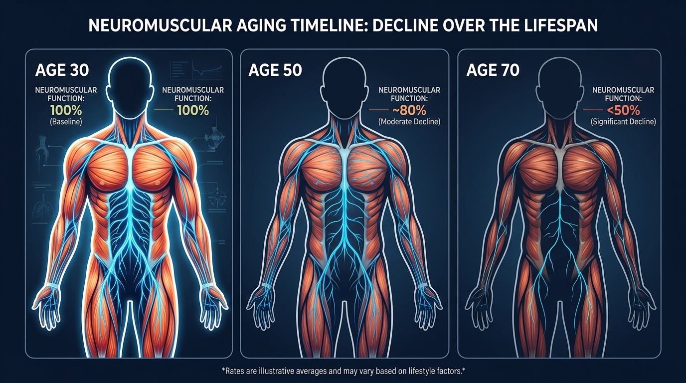
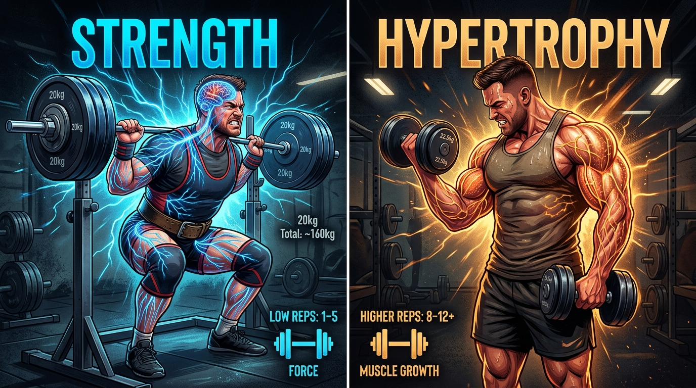
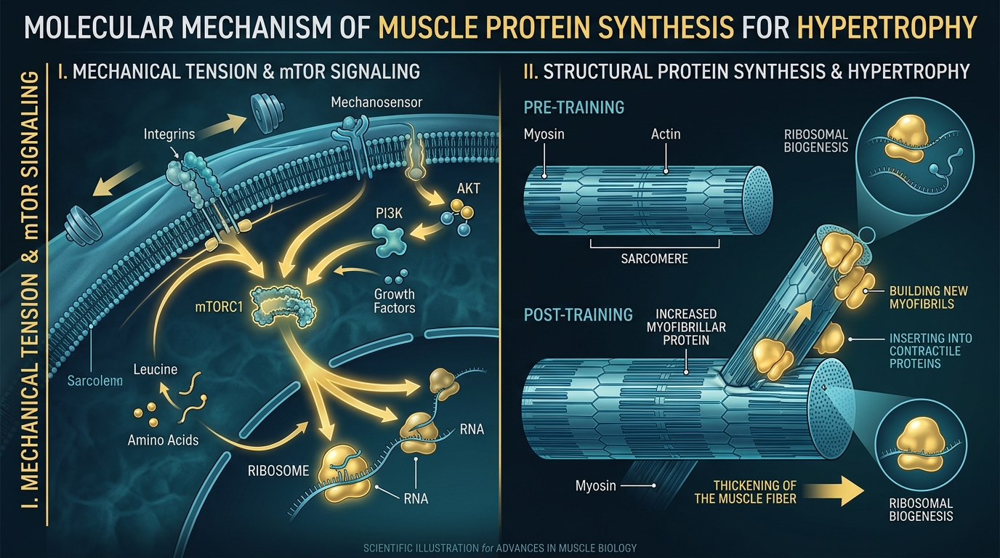
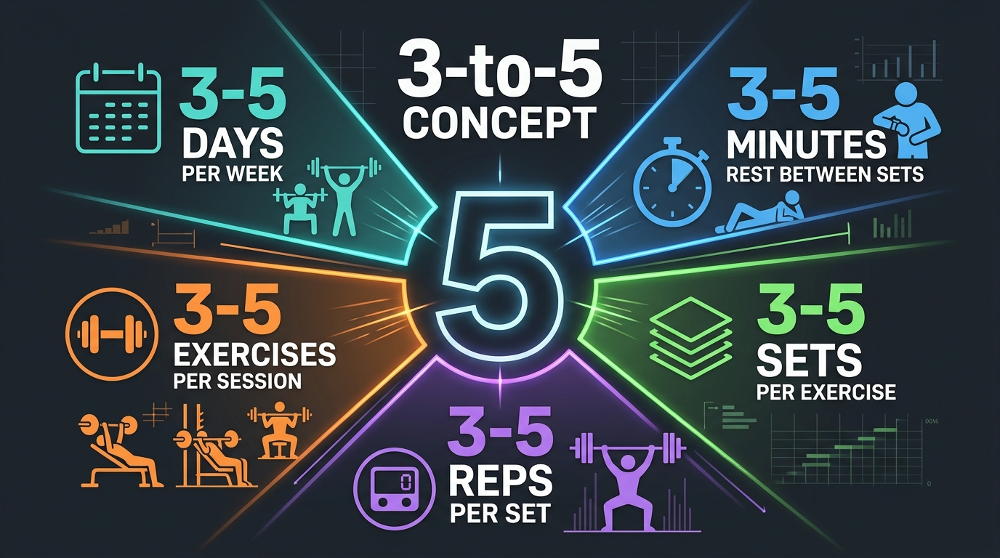
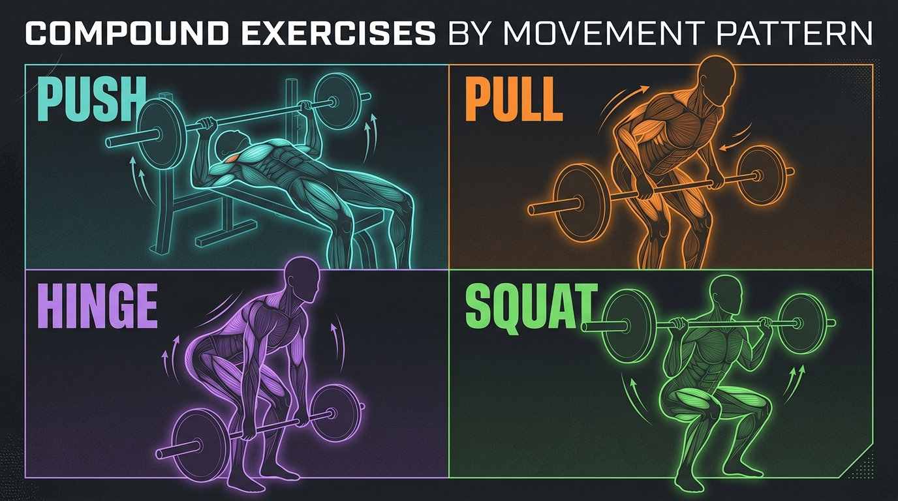

Strength training isn't optional — it's the only way to fight neuromuscular aging

The single most important message of this episode: resistance exercise is the #1 tool to combat neuromuscular aging, and no other form of exercise can replace it. The decline isn't just about muscle size — strength and power erode far faster.
"If you have a body, you're an athlete. One of the major disservices we've done in this field is convince people that strength training is for athletes or for growing bigger muscles." — Dr. Andy Galpin (quoting Bill Bowerman, Nike co-founder)
The encouraging news: it's never too late to start. A study on people over 90 showed 30-170% improvements in muscle size and strength in just 12 weeks. The decline isn't an inevitable consequence of aging — it's almost entirely due to loss of training.
Strength vs. Hypertrophy: Related but different

This is the episode's foundational distinction. Strength is a function (how much force you can produce). Hypertrophy is a structure (how big the muscle is). They often come together, but they require different training protocols and operate through different mechanisms.
| Variable | Strength | Hypertrophy |
|---|---|---|
| Primary driver | Neural adaptation — motor unit recruitment, firing rate | Muscle protein synthesis — mechanical tension on the cell |
| Rep range | 1-5 reps | 5-30 reps |
| Load | 70-100% of 1RM | 30-85% of 1RM |
| Rest periods | 3-5 minutes | 30 seconds - 2 minutes |
| Rep cadence | 3:1:1 (explode on concentric) | 3:1:2 (controlled throughout) |
| Train to failure? | Not required (technical failure OK) | Beneficial, especially for advanced |
| Exercise selection | Compound lifts, movement patterns | Compounds + isolation, muscle-specific |
| Recovery | 24-48 hours (lower volume) | 48-72 hours (higher volume/damage) |
The key insight: Exercises don't determine adaptation — how you execute them does. A deadlift can build strength, hypertrophy, or power depending on the load, rep range, speed, and rest you choose.
How muscles actually get stronger and bigger

Strength = neural efficiency (not just bigger muscles)
Getting stronger is primarily about your nervous system learning to recruit more motor units, fire them faster, and coordinate them better. This is why beginners can gain significant strength without visible muscle growth — it's a neural adaptation first.
Hypertrophy = mechanical tension triggers mTOR
Muscle growth happens when mechanical tension stretches the cell wall, activating the mTOR signaling pathway. This triggers muscle protein synthesis — the process of building new contractile proteins inside the fiber, making it physically larger.
mTOR vs. AMPK: the interference effect
Strength/hypertrophy training activates the mTOR pathway (anabolic — build). Endurance training activates AMPK (catabolic — break down for energy). Doing both simultaneously can create interference, which is why programming order and timing matter.
Protein alone is anabolic
Eating protein stimulates muscle protein synthesis for 4-5+ hours — even without training. This is why protein intake is so critical. But combining protein with training creates a much larger and longer-lasting anabolic response.
Muscle is an organ system
Beyond movement, muscle plays critical roles in immune regulation, blood glucose control, amino acid storage, and whole-body homeostasis. This is why maintaining muscle mass is a health priority, not just an aesthetic one.
The 3-to-5 Concept: Galpin's strength protocol in one rule

For strength, speed, and power training, Galpin simplifies the entire program design into one elegant rule: everything is 3 to 5.
3-5 days/week
Training frequency
3-5 exercises
Per session
3-5 reps
Per set
3-5 sets
Per exercise
3-5 min rest
Between sets
Progressive overload: increase load by 3-5% per week. This framework makes program design simple and memorable while hitting the exact parameters proven to build strength.
"The methods are many, but the concepts are few. If you nail the concepts, the specific methods matter far less than people think." — Dr. Andy Galpin
Think in movement patterns, not muscles

For strength training, Galpin recommends organizing exercises by movement patterns rather than individual muscles. This ensures balanced development and reduces injury risk.
Stick with the same exercises for 6-12 weeks minimum. It takes ~3 weeks just to establish your groove, loading, and soreness patterns before meaningful progression begins. The conjugate approach — small variations of the same movement (grip width, bar type, ROM) — gives you specificity while avoiding repetitive strain.
Periodization: linear vs. undulating
How you organize training across weeks and months matters as much as what you do in a single session. Galpin covers two major approaches:
Linear Periodization
Focus on one adaptation at a time for 6-8 weeks (e.g., hypertrophy block → strength block → power block). Pro: Maximum specificity. Con: You lose the other adaptations while you focus. Best for competitive athletes with specific peaking goals.
Undulating Periodization
Train multiple adaptations within the same week (e.g., Monday = power, Wednesday = hypertrophy, Friday = strength). Pro: Maintains all fitness qualities simultaneously. Con: Less maximal progress in any single area. Best for general fitness and health.
For most people pursuing health and longevity, Galpin favors an undulating approach — it keeps you well-rounded across all adaptations rather than sacrificing one to peak in another.
The details that make or break your program
Warm-up strategy depends on your goal
For strength/power: prioritize intensity preservation — do as many warm-up sets as needed until you hit peak performance, even if it takes 15 minutes. For hypertrophy: prioritize volume preservation — keep warm-ups short so you have energy for more working sets.
Breathing under heavy load
Inhale through the abdomen (not shoulders) to create intra-abdominal pressure. For single heavy reps: hold breath for the entire lift. For higher reps: breathe at the top of each rep. Never hold your breath for more than one rep at near-max loads.
Time under tension for hypertrophy (equipment-limited)
When you don't have heavy weights (hotel, home gym), slow the rep cadence dramatically: 5-second eccentric, 2-second pause, 3-second concentric. You can stimulate the same hypertrophy with far less weight. Galpin goes as extreme as 10:10:10 with bodyweight movements.
Training to failure: it depends
For strength: not required, especially for beginners (0-5 years). Stop at technical failure. For hypertrophy: more beneficial, especially for advanced lifters. But even beginners should occasionally take safe exercises to true failure to learn what their max actually feels like.
5 Things to Remember
Strength training is the only way to preserve your neuromuscular system
No amount of cardio, yoga, or stretching replaces heavy resistance training for maintaining motor units, muscle power, and functional independence as you age.
Strength and hypertrophy are different adaptations
Strength is neural (force production). Hypertrophy is structural (muscle size). The same exercise can train either — it's the reps, load, rest, and intent that determine the outcome.
Use the 3-to-5 rule for strength
3-5 days, 3-5 exercises, 3-5 reps, 3-5 sets, 3-5 minutes rest. Simple, evidence-based, and easy to remember. Progress load by 3-5% per week.
It's never too late to start
People over 90 showed 30-170% improvements in 12 weeks. Age-related muscle loss is primarily a training loss, not an inevitable biological decline.
Organize by movement patterns, not muscles
Push, pull, hinge, squat. Keep the same exercises for 6-12 weeks. Balance across patterns to prevent injury and build functional, transferable strength.
Watch the Full Episode
- The full neuromuscular aging breakdown — why power declines 4x faster than muscle size, and how motor unit loss affects daily function
- Acetylcholine & the neuromuscular junction — the complete molecular mechanism of how nerves signal muscles to contract
- mTOR vs AMPK pathways explained — the molecular switches for muscle building vs. endurance, and why combining them creates interference
- The Prilepin Chart — the reference chart showing optimal set/rep distribution across intensity zones for strength
- Blood pressure & breathing mechanics — proper bracing strategy for heavy lifts and rep-by-rep breathing patterns
- The Bulgarian Method debate — extreme specificity (daily max attempts) vs. variation, and when each approach works